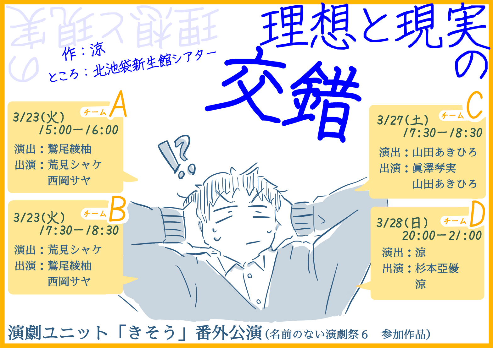

新着情報
「きそう」、4チームに分裂・・！？
全4回の公演を、演者・演出者別々の４つの組み合わせにてお届けしました
ご来場ありがとうございました。
※名前のない演劇祭６参加作品

更新情報
- 2022年1月11日
- 番外公演『理想と現実の交錯』の情報を更新しました！！
- 2020年2月25日
- 第3回公演の情報を更新しました！！
- 2019年11月28日
- 第3回公演『凄六』・『占い師のお仕事』のチケット予約開始＆チラシ公開！
- 2019年11月25日
- 「過去の公演」でチラシが見られるようになりました！
- 2019年11月21日
- 番外公演『こつつぼ』の情報を更新しました。
ごあいさつ
「熊谷で芝居集団、作っちゃいます？」
こんな会話から生まれた演劇ユニット。
埼玉県熊谷市を中心に活動する演劇ユニット「きそう」。
熊谷市在住のメンバーから、埼玉県南部、群馬県、栃木県、東京都在住のメンバーまで。
起草段階から作っていく意味での「きそう」、
奇想天外なアイデアが飛び出す「きそう」、
既作と創作、どちらも行う「きそう」、
はたまた、お客さんが「きそう」な演劇集団。
それが、演劇ユニット「きそう」。
「きそう」のあゆみ
- 2017年 秋
- 演劇ユニット「きそう」活動開始
- 2017年10月14日
- 公式Twitter開設
- 2018年2月11・12日
- 旗揚げ公演『ロングタイム・アゴー』『ここだけの話』@LIVE SPACE CASA TAJI
- 2018年12月15・16日
- 第2回公演『イントレランスの祭』@熊谷市民ホール
- 2019年8月19日
- 番外公演『こつつぼ』@北池袋新生館シアター
- 2020年1月25・26日
- 第3回公演『凄六』『占い師のお仕事』@熊谷市民ホール
- 2021年3月23・27・28日
- 番外公演『理想と現実の交錯』@北池袋新生館シアター
過去の公演

番外公演

第3回公演

番外公演

第２回公演